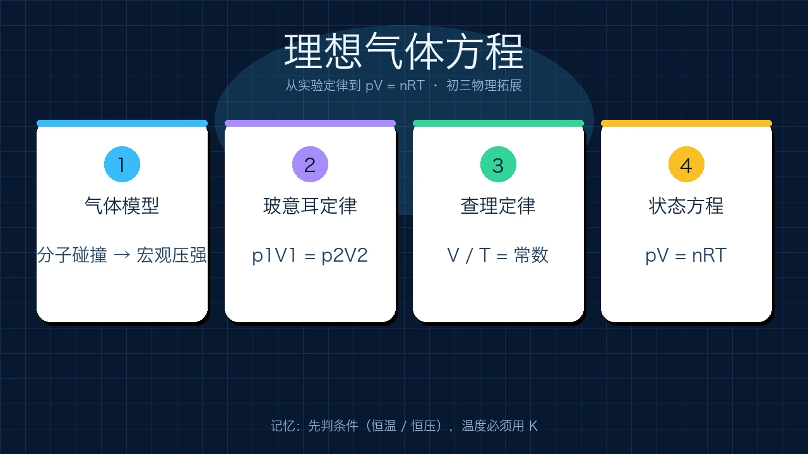

理想气体方程
从实验定律到 pV=nRT
打气筒越压越费力、密闭轮胎晒热后胎压上升：压强、体积和温度如何共同变化？
本课任务：用模型和实验定律，把直觉变成能计算、能解释的关系。

你最想先解释哪个现象？
选择一个问题；稍后用它检验你的理解。
完成本课，你能够……
建模
说清理想气体模型如何把微观分子运动连到压强。
推理
在条件明确时，选择玻意耳定律、查理定律或 pV=nRT。
计算与迁移
统一单位、把 ℃ 换成 K，并解释轮胎等真实情境。
压强从哪里来？
把气体看成大量不断运动的微小分子。分子撞击容器壁，就会对器壁产生力；单位面积上平均撞击作用的强弱表现为压强 p。
- 温度升高：分子运动更快，撞击更强；
- 体积变小：同样多分子在更小空间内更频繁撞壁；
- 充入更多气体：撞壁的分子数增多。
理想气体的简化
在温度不太低、压强不太高时，可近似认为分子体积和分子间作用力相对很小。
模型不是“真实照片”，而是帮助我们抓住 p、V、T、n 关系的工具。
温度不变时：体积减小，压强增大
一定质量气体、温度不变时，压强与体积成反比。
条件要圈出
温度不变，气体质量不变。两个条件缺一个，就不能直接使用这个式子。
生活解释
堵住注射器出口后推活塞，V 变小；分子更频繁撞壁，因此 p 变大。
压强不变时：温度升高，体积增大
一定质量气体、压强不变时，体积与热力学温度成正比。
关键：比例关系从绝对零度开始计量，所以 T 必须使用开尔文（K），不能直接把 ℃ 代入。
把三种变化统一起来
| 符号 | 物理量 | 推荐单位 | 计算提醒 |
|---|---|---|---|
| p | 压强 | Pa | 1 kPa = 1000 Pa |
| V | 体积 | m³ | 1 L = 10⁻³ m³ |
| n | 物质的量 | mol | 气体多少的量 |
| T | 热力学温度 | K | T = t + 273 |
| R | 气体常量 | 8.31 J/(mol·K) | 配合 Pa、m³、K |
温度必须先过这一关
0 ℃
273 K
27 ℃
300 K
127 ℃
400 K
先换 K，再代入比例式或 pV=nRT；在本课计算中通常取 273。
拖动参数，让状态满足 pV = nRT
固定 n = 1.00 mol 与 T = 300 K。先改变体积，再用“自动匹配压强”把状态拉回方程。
拖动滑块，观察分子、活塞和两边数值的变化。
体积减半，压强怎样变？
20 ℃ 时，气体体积 V₁ = 4.0 L、压强 p₁ = 1.0×10⁵ Pa。温度不变，压缩到 V₂ = 2.0 L，求 p₂。
- 条件为温度不变、气体质量不变，选 p₁V₁ = p₂V₂。
- p₂ = p₁V₁/V₂。
- p₂ = 1.0×10⁵ × 4.0/2.0 = 2.0×10⁵ Pa。
升温时体积怎样变？
气体在 27 ℃ 时体积为 3.0 L，保持压强不变加热到 127 ℃，求末体积。
- 先换温度：T₁ = 300 K，T₂ = 400 K。
- 压强不变，选 V₁/T₁ = V₂/T₂。
- V₂ = 3.0 × 400/300 = 4.0 L。
单位统一后再计算
0 ℃、p = 1.01×10⁵ Pa 时，2.0 mol 理想气体的体积是多少？取 R = 8.31 J/(mol·K)。
- T = 0 + 273 = 273 K；p 已是 Pa。
- V = nRT/p = 2.0×8.31×273/(1.01×10⁵) m³。
- V ≈ 0.0449 m³ = 44.9 L。
代入查理定律前，温度应该用？
先作答，再看诊断。
四个高频误区
温度直接用 ℃
比例定律必须使用绝对温度 K，否则零点被错放。
单位没有配套
用 R = 8.31 时，p 要用 Pa，V 要用 m³。
忘记 n 是否改变
打气时气体质量增加，不能把 pV 当作常数。
只背“反比”
p 与 V 成反比需要温度、气体质量不变这两个条件。
密闭轮胎受热：体积近似不变，胎压为何升高？
独立判断后再查看解释。
给夏季轮胎写一条安全解释
轮胎从 20 ℃ 升至 50 ℃，气体量和体积近似不变。请完成三句话：
- 写出不变的量与改变的量。
- 把 20 ℃、50 ℃ 换成 K，并比较 p₂/p₁ = T₂/T₁。
- 说明为什么“冬天打得刚好”不代表“夏天仍然安全”。
拓展：如果车辆刚长时间行驶，除了环境温度，轮胎内部空气还会因摩擦生热；实际情况要按车辆标注的冷胎压检查。
一张概念图，一条解题路线


把这节课放进知识网络
用你的问题收尾
把你在开始时选的问题和一个例题带给 AI 学伴。请先说明：哪些量不变、哪些量改变、你准备使用哪条规律。